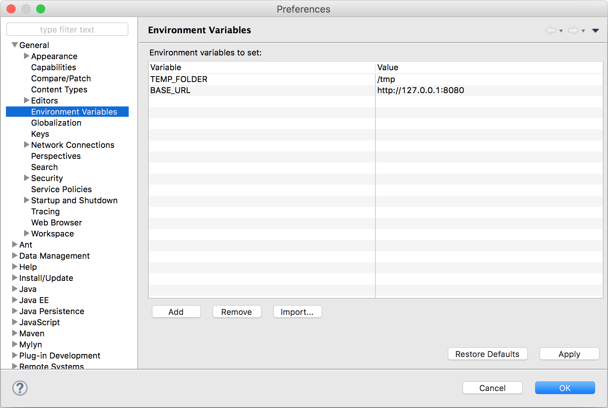

What?
Tired of adding Environment Variables for separate sets of JUnit Configurations in eclipse?
Don't want to create shell scripts to start your Eclipse application?
Then this plugin might as well be the solution to your problems. It allows you to define Environment Variables, which are global to all your Eclipse Configurations.
With this plugin, there's no need anymore to define Environment Variables for each separate Eclipse Configuration.
Compatibility
The plugin has been tested on Eclipse 4.4 to Eclipse 4.10
Download
Click here to download the plugin.
There is also a more recent, JDK9+ compatible version, which can be downloaded here.
Drop the plugin in the "dropins" folder in your Eclipse-installation folder.